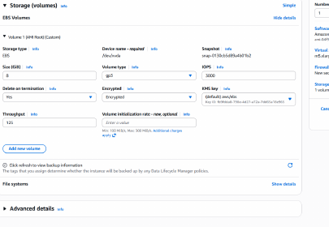
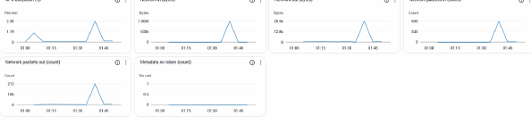

Project objective
Deploy a functioning web server while applying least-privilege network access, encrypted storage, key management, monitoring, and recovery planning.
What I produced
- Launched an EC2 instance inside a purpose-built VPC and subnet.
- Configured security-group rules for controlled administrative and web access.
- Attached encrypted EBS storage using AWS Key Management Service.
- Installed and validated an Apache web service and configured monitoring through CloudWatch.
- Documented screenshots and configuration evidence for the deployed environment.
Key decisions
- Use security groups to limit inbound access by protocol and source.
- Encrypt persistent storage and manage the encryption key separately from the instance.
- Monitor instance health and utilization so operational issues can be identified quickly.
- Document backup and recovery considerations instead of treating successful launch as the end of deployment.
1 secure serverDeployed and validated in AWS
Encrypted storageEBS protected with KMS
Operational visibilityCloudWatch monitoring enabled
Validation and analysis
- Confirmed the instance state, addressing, storage encryption, security rules, and web response.
- Verified monitoring data and documented the deployment sequence.
- Reviewed the design for confidentiality, integrity, availability, and recoverability.
What I would improve next
- Place the server behind an Application Load Balancer and remove direct public administration.
- Use Systems Manager Session Manager instead of SSH.
- Automate the deployment with CloudFormation or Terraform.
- Add automated snapshots, patching, and log centralization.